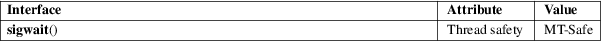

sigwait − wait for a signal
Standard C library (libc, −lc)
#include <signal.h>
int sigwait(const sigset_t *restrict set, int *restrict sig);
Feature Test Macro Requirements for glibc (see feature_test_macros(7)):
sigwait():
Since glibc 2.26:
_POSIX_C_SOURCE >= 199506L
glibc 2.25 and earlier:
_POSIX_C_SOURCE
The sigwait() function suspends execution of the calling thread until one of the signals specified in the signal set set becomes pending. The function accepts the signal (removes it from the pending list of signals), and returns the signal number in sig.
The operation of sigwait() is the same as sigwaitinfo(2), except that:
|
• |
sigwait() returns only the signal number, rather than a siginfo_t structure describing the signal. | ||
|
• |
The return values of the two functions are different. |
On success, sigwait() returns 0. On error, it returns a positive error number (listed in ERRORS).
|
EINVAL |
set contains an invalid signal number. |
For an explanation of the terms used in this section, see attributes(7).

sigwait() is implemented using sigtimedwait(2).
The glibc implementation of sigwait() silently ignores attempts to wait for the two real-time signals that are used internally by the NPTL threading implementation. See nptl(7) for details.
POSIX.1-2008.
POSIX.1-2001.
See pthread_sigmask(3).
sigaction(2), signalfd(2), sigpending(2), sigsuspend(2), sigwaitinfo(2), sigsetops(3), signal(7)